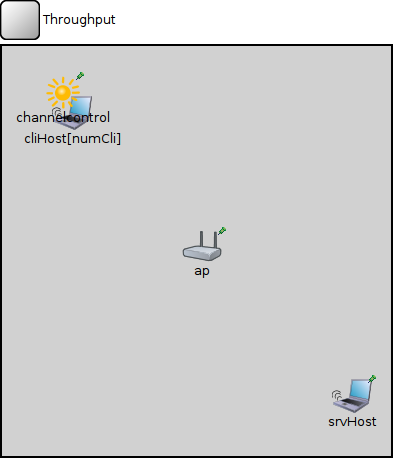
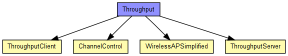
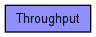

(no description)
The following diagram shows usage relationships between types. Unresolved types are missing from the diagram. Click here to see the full picture.
The following diagram shows inheritance relationships for this type. Unresolved types are missing from the diagram. Click here to see the full picture.
| Name | Type | Default value | Description |
|---|---|---|---|
| numCli | int | ||
| playgroundSizeX | double | ||
| playgroundSizeY | double |
| Name | Value | Description |
|---|---|---|
| isNetwork | ||
| display | b=297,203 |
| Name | Type | Default value | Description |
|---|---|---|---|
| cliHost.cli.destAddress | string | "" |
destination MAC address, or module path name of destination station; empty means off |
| cliHost.cli.startTime | double | this.waitTime |
time of sending the first request |
| cliHost.cli.waitTime | double | uniform(0s,1s) |
interval between sending requests |
| cliHost.cli.reqLength | int | 100B |
length of request packets |
| cliHost.cli.respLength | int | 1KB |
length of response packets |
| cliHost.wlan.mgmt.accessPointAddress | string |
MAC address of associate AP |
|
| cliHost.wlan.mgmt.frameCapacity | int | 100 | |
| cliHost.wlan.mac.address | string | "auto" |
MAC address as hex string (12 hex digits), or "auto". "auto" values will be replaced by a generated MAC address in init stage 0. |
| cliHost.wlan.mac.maxQueueSize | int |
max queue length in frames; only used if queueModule=="" |
|
| cliHost.wlan.mac.bitrate | double | ||
| cliHost.wlan.mac.rtsThresholdBytes | int | 2346B |
longer messages will be sent using RTS/CTS |
| cliHost.wlan.mac.retryLimit | int | -1 |
maximum number of retries per message, -1 means default |
| cliHost.wlan.mac.cwMinData | int | -1 |
contention window for normal data frames, -1 means default |
| cliHost.wlan.mac.cwMinBroadcast | int | -1 |
contention window for broadcast messages, -1 means default |
| cliHost.wlan.mac.mtu | int | 1500 | |
| cliHost.wlan.radio.channelNumber | int | 0 |
channel identifier |
| cliHost.wlan.radio.transmitterPower | double | 20mW |
power used for transmission of messages (in mW) |
| cliHost.wlan.radio.bitrate | double |
(in bits/s) |
|
| cliHost.wlan.radio.thermalNoise | double | -110dBm |
base noise level (dBm) |
| cliHost.wlan.radio.pathLossAlpha | double | 2 |
used by the path loss calculation |
| cliHost.wlan.radio.snirThreshold | double | 4dB |
if signal-noise ratio is below this threshold, frame is considered noise (in dB) |
| cliHost.wlan.radio.sensitivity | double |
received signals with power below sensitivity are ignored |
|
| cliHost.mobility.debug | bool | false |
debug switch |
| cliHost.mobility.cx | double | 100 |
x coord of the center of the circle |
| cliHost.mobility.cy | double | 100 |
y coord of the center of the circle |
| cliHost.mobility.r | double | 100 |
radius of the circle |
| cliHost.mobility.speed | double | 2mps |
speed of the host (in m/s) |
| cliHost.mobility.startAngle | double | 0 |
starting angle (degreees) |
| cliHost.mobility.updateInterval | double | 100ms |
time interval to update the hosts position |
| srvHost.wlan.mgmt.accessPointAddress | string |
MAC address of associate AP |
|
| srvHost.wlan.mgmt.frameCapacity | int | 100 | |
| srvHost.wlan.mac.address | string | "auto" |
MAC address as hex string (12 hex digits), or "auto". "auto" values will be replaced by a generated MAC address in init stage 0. |
| srvHost.wlan.mac.maxQueueSize | int |
max queue length in frames; only used if queueModule=="" |
|
| srvHost.wlan.mac.bitrate | double | ||
| srvHost.wlan.mac.rtsThresholdBytes | int | 2346B |
longer messages will be sent using RTS/CTS |
| srvHost.wlan.mac.retryLimit | int | -1 |
maximum number of retries per message, -1 means default |
| srvHost.wlan.mac.cwMinData | int | -1 |
contention window for normal data frames, -1 means default |
| srvHost.wlan.mac.cwMinBroadcast | int | -1 |
contention window for broadcast messages, -1 means default |
| srvHost.wlan.mac.mtu | int | 1500 | |
| srvHost.wlan.radio.channelNumber | int | 0 |
channel identifier |
| srvHost.wlan.radio.transmitterPower | double | 20mW |
power used for transmission of messages (in mW) |
| srvHost.wlan.radio.bitrate | double |
(in bits/s) |
|
| srvHost.wlan.radio.thermalNoise | double | -110dBm |
base noise level (dBm) |
| srvHost.wlan.radio.pathLossAlpha | double | 2 |
used by the path loss calculation |
| srvHost.wlan.radio.snirThreshold | double | 4dB |
if signal-noise ratio is below this threshold, frame is considered noise (in dB) |
| srvHost.wlan.radio.sensitivity | double |
received signals with power below sensitivity are ignored |
|
| srvHost.mobility.x | double | -1 |
start x coordinate (-1 = display string position, or random if it's missing) |
| srvHost.mobility.y | double | -1 |
start y coordinate (-1 = display string position, or random if it's missing) |
| ap.wlan.mgmt.frameCapacity | int | 100 | |
| ap.wlan.mac.address | string | "auto" |
MAC address as hex string (12 hex digits), or "auto". "auto" values will be replaced by a generated MAC address in init stage 0. |
| ap.wlan.mac.maxQueueSize | int |
max queue length in frames; only used if queueModule=="" |
|
| ap.wlan.mac.bitrate | double | ||
| ap.wlan.mac.rtsThresholdBytes | int | 2346B |
longer messages will be sent using RTS/CTS |
| ap.wlan.mac.retryLimit | int | -1 |
maximum number of retries per message, -1 means default |
| ap.wlan.mac.cwMinData | int | -1 |
contention window for normal data frames, -1 means default |
| ap.wlan.mac.cwMinBroadcast | int | -1 |
contention window for broadcast messages, -1 means default |
| ap.wlan.mac.mtu | int | 1500 | |
| ap.wlan.radio.channelNumber | int | 0 |
channel identifier |
| ap.wlan.radio.transmitterPower | double | 20mW |
power used for transmission of messages (in mW) |
| ap.wlan.radio.bitrate | double |
(in bits/s) |
|
| ap.wlan.radio.thermalNoise | double | -110dBm |
base noise level (dBm) |
| ap.wlan.radio.pathLossAlpha | double | 2 |
used by the path loss calculation |
| ap.wlan.radio.snirThreshold | double | 4dB |
if signal-noise ratio is below this threshold, frame is considered noise (in dB) |
| ap.wlan.radio.sensitivity | double |
received signals with power below sensitivity are ignored |
|
| ap.mobility.x | double | -1 |
start x coordinate (-1 = display string position, or random if it's missing) |
| ap.mobility.y | double | -1 |
start y coordinate (-1 = display string position, or random if it's missing) |
| channelcontrol.coreDebug | bool | false |
debug switch for core framework |
| channelcontrol.pMax | double | 20mW |
maximum sending power used for this network (in mW) |
| channelcontrol.sat | double | -110dBm |
signal attenuation threshold (in dBm) |
| channelcontrol.alpha | double | 2 |
path loss coefficient |
| channelcontrol.carrierFrequency | double | 2.4GHz |
carrier frequency of the channel (in Hz) |
| channelcontrol.numChannels | int | 1 |
number of radio channels (frequencies) |
network Throughput { parameters: int numCli; double playgroundSizeX; double playgroundSizeY; @display("b=297,203"); submodules: cliHost[numCli]: ThroughputClient { parameters: @display("r=,,#707070"); } srvHost: ThroughputServer { parameters: @display("p=350,350;r=,,#707070"); } ap: WirelessAPSimplified { parameters: @display("p=200,200;r=,,#707070"); } channelcontrol: ChannelControl { parameters: playgroundSizeX = playgroundSizeX; playgroundSizeY = playgroundSizeY; @display("p=61,46"); } }